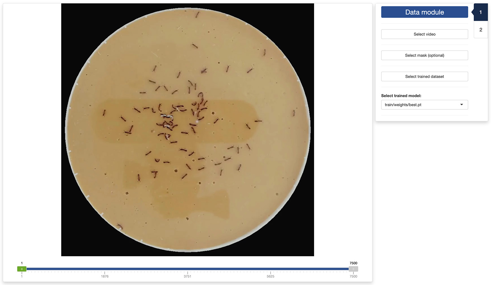
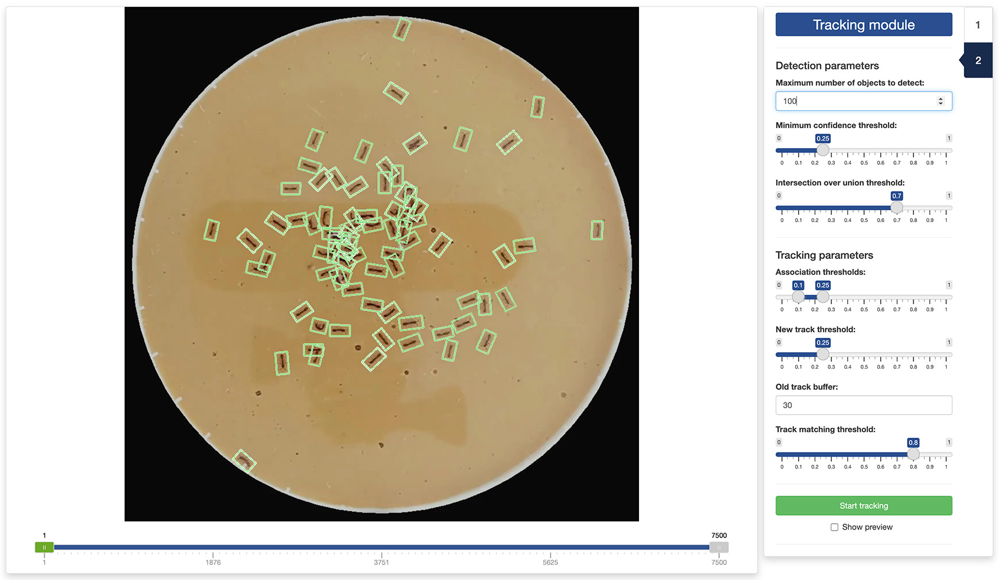
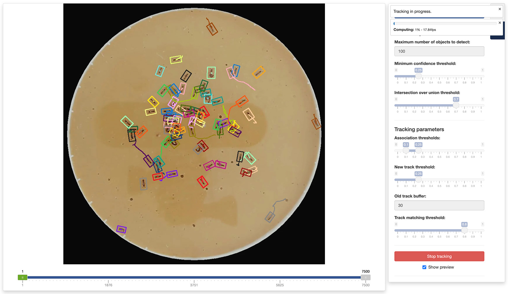

In this tutorial, we will discuss how to use the third app provided
with trackRai to track objects in a video using a trained
YOLO11 model, as explained in the previous
tutorial. While it recommended to train the model on a machine with
an NVIDIA graphics card and the CUDA framework installed, tracking can
be done with reasonable performance on machines without these
specifications.
4.1 - Launch the tracking app
To launch the tracking app, run the following in the R console:
This will open the app either in the viewer panel of RStudio and
Positron, or in your default internet browser. You can control where the
app is opened using the launch.browser parameter (see the
documentation of shiny::runApp() for more information).
4.2 - Tab 1: data module
Once the app opens, you will be presented with the “Data” tab. First,
you need to select a video by clicking the Select video
button. You can also select an optional mask by clicking the
Select mask (optional) button. This will load the video in
the app and you can navigate it using the slider under the display
panel. The slider has three handles:
- the green handle allows you to navigate through the video to display a frame of your choice;
- the two grey handles allow you to restrict the processing of the video to a range of frames in the video. This can be convenient when only a portion of the video is usable, for instance.
Finally, you will need to select a trained YOLO dataset by clicking
the Select trained dataset button and navigate to a folder
containing a trained YOLO dataset (it should a folder named
YOLO). Select this folder. If the folder contains multiple
trained models, you can select the one of your choice using the dropdown
menu at the bottom of the sidebar.

Once the video and trained dataset are loaded in the app, the second tab of the app will become available and you can click on it to navigate there.
4.3 - Tab 2: tracking module
In the second tab of the tracking app, you can set the parameters for the object detection and tracking. The detection parameters are used by YOLO to decide which parts of the image contains an object of interest. These parameters are:
- Maximum number of objects to detect: Maximum number of detections allowed per frame. Limits the total number of objects the model can detect in a single inference, preventing excessive outputs in dense scenes.
- Minimum confidence threshold: the minimum confidence threshold for detections. Objects detected with confidence below this threshold will be disregarded. Adjusting this value can help reduce false positives.
- Intersection over union threshold: threshold for non-maximum suppression. Lower values result in fewer detections by eliminating overlapping boxes, which can be useful for reducing duplicates.
The effect of these parameters on the detection quality can be seen directly in display panel.

The tracking parameters are used by YOLO to decide which object in a given frame corresponds to which object in the following frame. These parameters are:
- Association thresholds: The highest value is the threshold used for initial association of a detection with a track. If the detection’s score is above this threshold, it could be associated in the first round. The lowest value is the threshold used for secondary association. If a detection wasn’t associated in the first round and its score is higher than this, it might still be associated in a second round.
- New track threshold: This is the threshold used for starting a new track. If a detection doesn’t match any existing tracks and its score is above this threshold, a new track will be initialized.
- Old track buffer: This is the number of frames allowed to pass without receiving updates from a track before it will be removed. Higher values allow tracks to remain active longer without updates, which might help with intermittent detections but could increase the risk of tracking errors.
- Track matching threshold: This threshold is used for matching tracks between consecutive frames. Only tracks with a score above this threshold are considered for matching.
You cannot directly observe the effect of this parameters in the
display panel. However, you can run the tracking on a small portion of
the video and use the Show preview mode to evaluate the
quality of the resulting tracks.
Once you are satisfied with the selected parameters, you can start
the tracking by clicking the Start tracking button. It will
open a file browser where you can select where to save the results of
the tracking. If you would like to see a preview of the tracks while the
tracking is running, tick the Show preview tick box.

Once the tracking has completed, you can visualize the results using the visualization app.